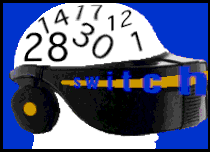

Erika S. Ismerio
CALENDAR
October 1 - 2 / 1995
Interactive Information Expo / New York
Info: Tel: (800) 829-3976
October 2 - 6 / 1995
Software Developer's Conf. East / Washington, D.C.
Info: Tel: (415) 905-2784
October 3 - 5 / 1995
Macworld Expo / Toronto
Info: Tel: (617) 361-8000
October 3 - 5 / 1995
PC Expo Chicago / Chicago
Info: Tel: (800) 823-3976
October 3 - 6 / 1995
Digital Audio and Video workshop/ Philadelphia
Info: Tel: (703) 907-7674
October 4 - 6 / 1995
Internet '95 / Norfolk, VA
Info: Tel: (800) 635-6155
October 8 -11 / 1995
Graph Expo / Chicago
Info: Graphic Arts Show Company, Tel: 1-703-2647200, Fax: 6209187
October 9 - 13 / 1995
Conference on Hypermedia and Interactivity in Museums/
Conference of the Museum Computer Network
Info: Tel: (415) 683-9775
October 11 - 13 / 1995
Multimedia Live! San Francisco
Info: Tel:(415) 453-1393
October 25 - 29 / 1995
Viper / Luzern, Switzerland
International Film and Videofestival
Info: Viper, P.O. Box 4929, 6002 Luzern, Switzerland.
Tel:/Fax: 41-1-2717227
November 1 - 3 / 1995
Interface 3 / Delicate Constructions / Hamburg, Germany
E-mail: interface2@hfbk.uni-hamburg.de
http://www.hfbk.unihamburg.de/interface3/link.html
[click
here for link]
Tel: 49-40-470968